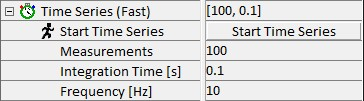

|
快速时间序列
|
快速时间序列序列器允许在固定位置以时间函数的形式采集数据源（如光谱或计数率）。在此模式下，例如可以观察样品随时间的变化。快速时间序列专为最大速度设计，因此不允许在测量之间暂停。可以调整以下参数来控制时间序列：

开始时间序列
按下此按钮将使用当前参数集开始时间序列。
测量次数
此参数确定将执行多少次测量。可以在 1 到 217 (=131072) 之间调整。
积分时间 [s]
使用此参数，每次测量的积分时间可以设置在 0.1 ms 到 10 s 之间。更改此参数将自动更改频率参数。如果输入的积分时间短于设备（如 CCD 相机）的最快可能时间，时间将自动设置为设备可能的最快时间。
频率 [Hz]
使用此参数，测量频率可以设置在 0.1 Hz 到 10 kHz 之间。更改此参数将自动更改积分时间参数。如果输入的频率高于设备（如 CCD 相机）的最高可能频率，频率将自动设置为设备可能的最高频率。